Your browser doesn't support the features required by impress.js, so you are presented with a simplified version of this presentation.
For the best experience please use the latest Chrome, Safari or Firefox browser.
What is the SAP Fiori?
* SAP Publish UI Architecture on 2013.11
* Include ERP CRM SCM
* New Platform for Cloud.
* Focus on Different Devices,Desktop,Mobild...
* Demo:https://demo-fioritrial.dispatcher.hana.ondemand.com/sap/hana/
What is the SAP Fiori?
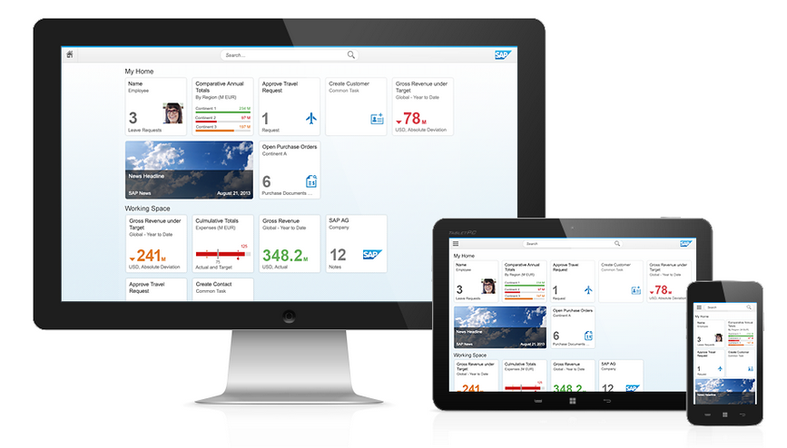
Requirements
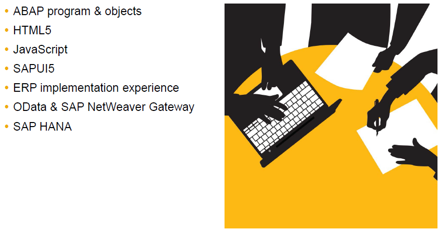
Design
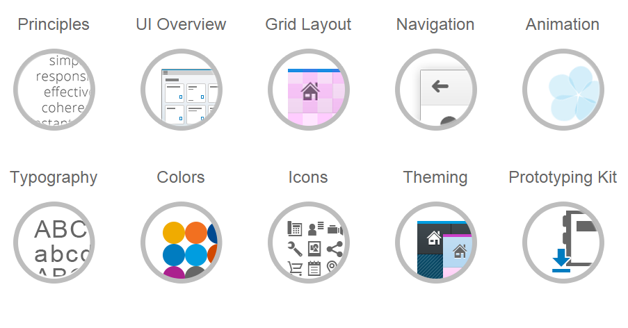
How to create BSP Application?
1) Start SAP Logon and go to the transaction SE80.
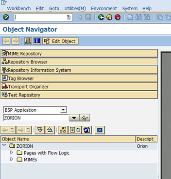
How to create BSP Application?
1) To select BSP Application from list.
2) To check the name if it is exist.
3) Click to enter key to create.
Note: we must name the BSP application's name begin with 'Z'
How to create BSP Application?
2) To save the BSP Container to a transport.
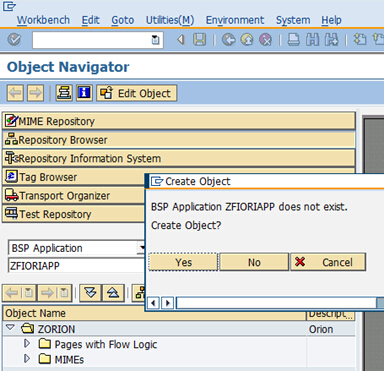
Upload the web project to Fiori
1) Remove the index.html file for uploading..
2) Remind that the service URL’s will need to more directories up.
../../../../../../../sap/opu/odata/sap/ZVIM_APPROVAL_SRV/
3) Remind that the URL to the I18N will change
/sap/bc/ui5_ui5/sap/zfiorivim/i18n/messageBundle.properties
Upload the web project to Fiori
4) Load your stylesheet in the component.js on top of the file via the following code
jQuery.sap.includeStyleSheet("/sap/bc/ui5_ui5/sap/zfiorivim/css/index.css","custom_style");
Note: If we load library async, we need to set css style at the end of the start.
Upload the web project to Fiori
5) Open the SAP system go transaction SE38
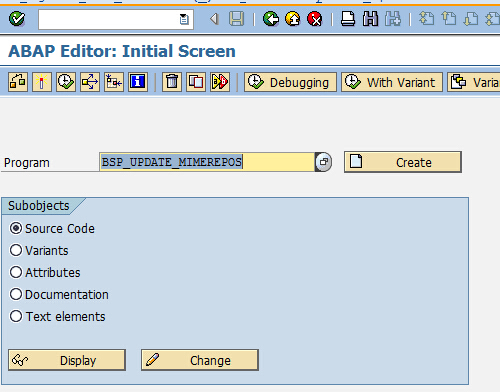
Upload the web project to Fiori
6) Enter the name of you Fiori application
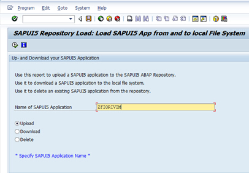
Upload the web project to Fiori
4) Load your stylesheet in the component.js on top of the file via the following code
jQuery.sap.includeStyleSheet("/sap/bc/ui5_ui5/sap/zfiorivim/css/index.css","custom_style");
What is the SAPUI5?
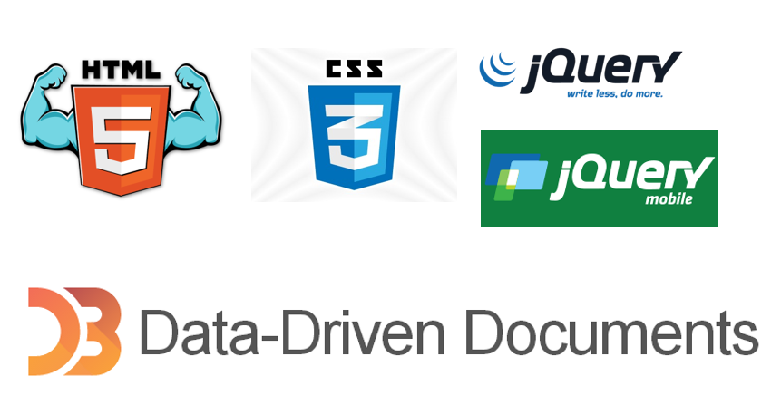
Development Tools
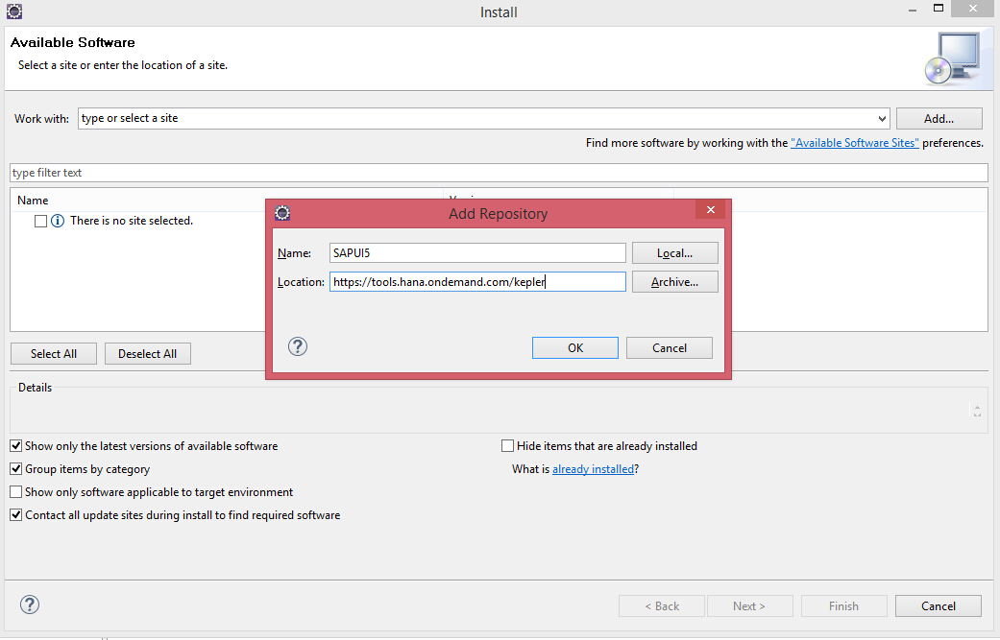
SAPUI5 tools - AppBuilder
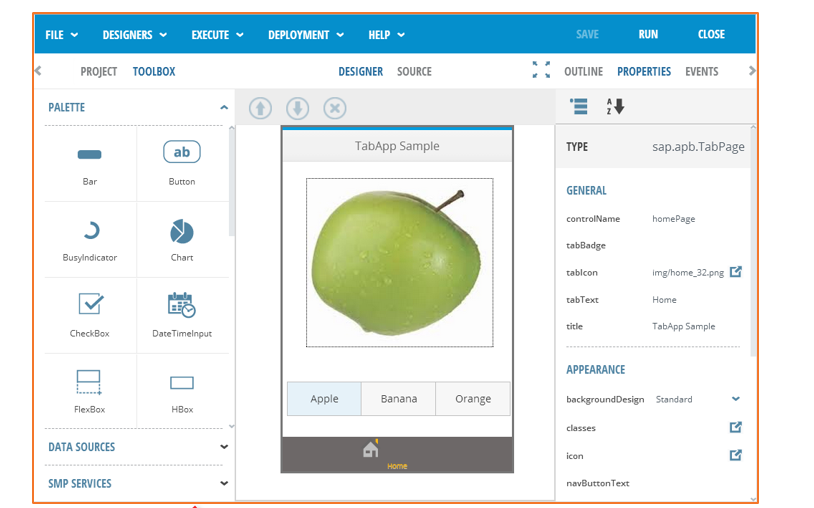
How to create SAPUI5 Application?
1) File ---> New Project
2) Select SAPUI5 Application
3) Select Library(ui.commons, sap.m)
4) Click Finish to Create
5) Modify the structure of the project
the structure of the project
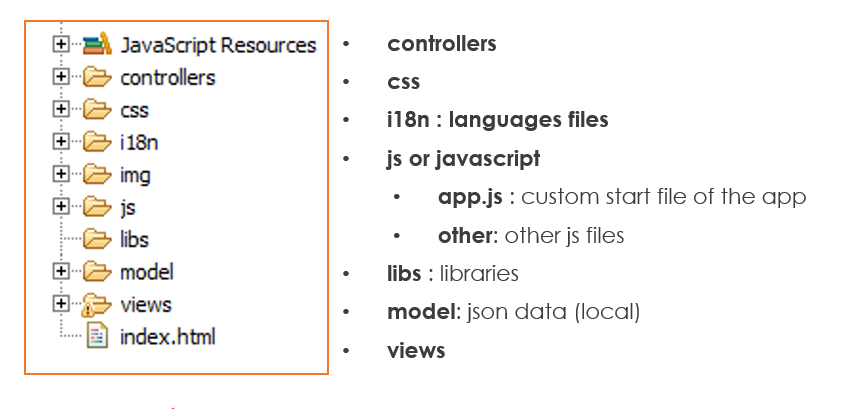
SAPUI5 View
1) HTML View
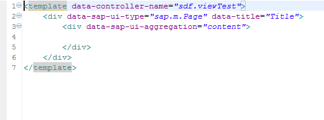
SAPUI5 View
2) JavaScript View
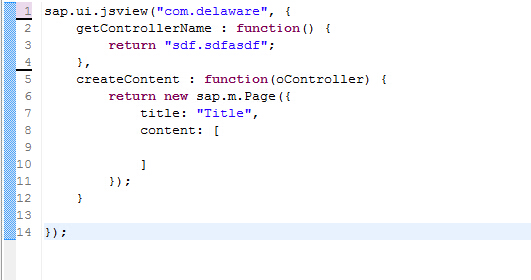
SAPUI5 View
3) XML View
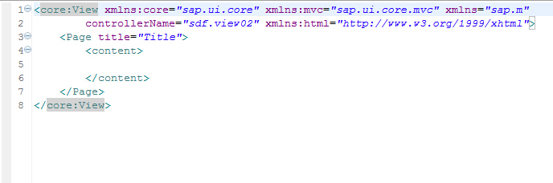
SAPUI5 View
4) JSON View
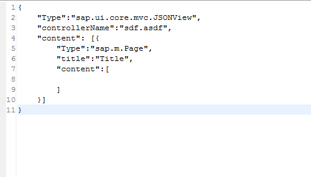
View Summary
1) Better to use JS View
2) Better to use HTML View
2) Show HTML View Project
How to run smoothly?
Solution:To load library async
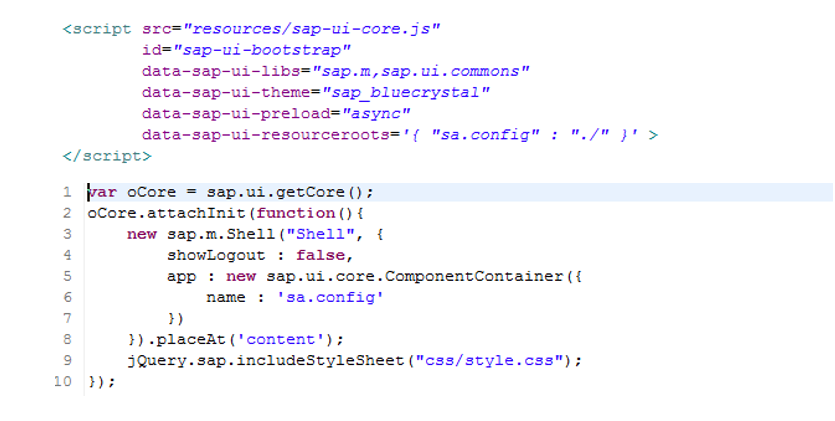
UI5 Component
1) Dialog, Select Dialog, Alert Dialog
2) Multiple Input,ComboBox, Multiple ComboBox
3) DatePicker,TimePicker
4) List View,Object List
5) Vertical Layout, Horizontal Layout
6) More Component.....
HTTP By Itself
1) To call service by ODataModel
If you need to get CSRF Token, you must use ODataModel, Note: it is different way to call
2) To call service by JSONModel
If response data is Json format,you'd better to use it, JSONModel is easy to bind.
2) To call service by XMLModel
If the server only support the xml data, you'd better to use XMLModel, because it is easy to bind data.
Problems
1) Integrate with Fiori,Split App Component is not work.
2) HTML Tag can not include the UI5 Tag.
We can not use the normal HTML tag to contain the UI5 tag.
3) Try to set attribute to bind data with 'bindingsyntax'
If we set two-way bind data, we need to set this attribute.
Compare
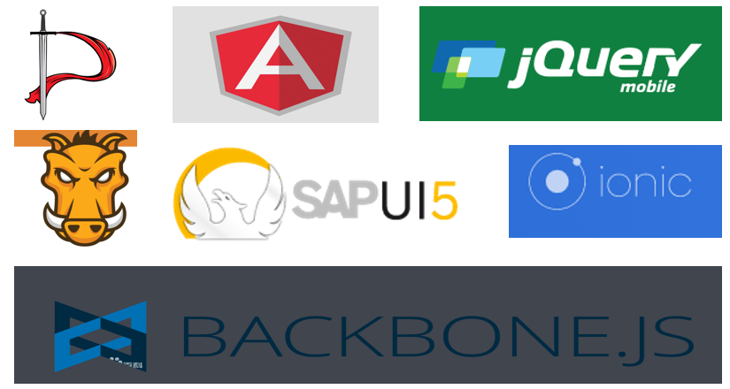
Share More HTML5 Knowledge
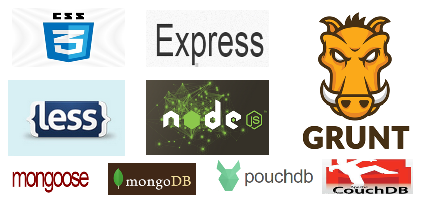